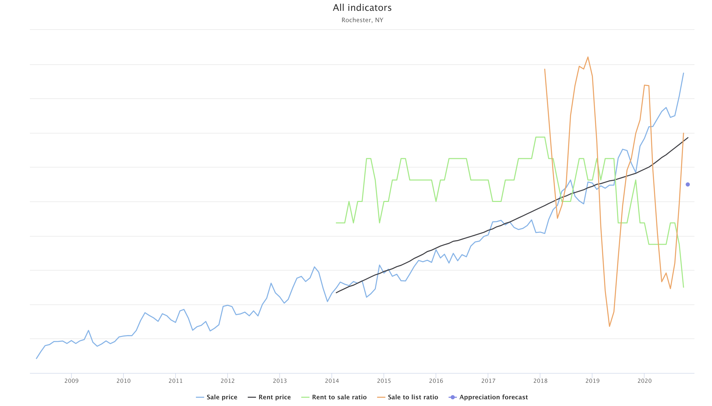

Housefly
Quoting from its "about" page
Welcome to housefly, a tool for finding investment opportunity in real estate markets across the US.
So I've started buying up remote real estate. I found that during a property search, a lot of conventionally important data can be ignored in favor of cashflow and appreciation focused indicators, as well as a few auxilliary metrics that help increase confidence in a property. To that end, I built a tool to help me narrow down the most profitable areas for my particular investment niche--single family homes as long-term rentals.
The indicators comprise of:
- Sale price
- Rent price
- Rent to price ratio
- Sale to list ratio
- Appreciation forecast
- Property tax (todo)
- Eviction rate (todo)
This is the main view. The current selection shows November 2019 "rent to price ratio" values in various metropolitan areas across the US. The list on the right ranks areas from greatest to least "rent to price ratio". We can view data for a large range of dates using the slider at the top.
Selecting range mode converts the data to a rate of change in order to understand indicator trends across time.
Selecting an area pulls up all historical indicator data for the region. 
A forthcoming update will add all the same data at state, county, and zipcode levels.